ഒരു ദിവസം നിങ്ങൾ ചെയ്യുന്ന എല്ലാ കാര്യങ്ങളും — ദിവസം തുടങ്ങുക, ക്ലിനിക്കുകൾ സന്ദർശിക്കുക, ഡോക്ടർ തരുന്ന കേസുകൾ എഴുതുക, പണം വാങ്ങുക, ദിവസം അവസാനിപ്പിക്കുക. ഒരു സ്ക്രീൻ, ഓരോ തവണയും ഒരു ബട്ടൺ മാത്രം.
സ്ക്രീനിൽ കാണുന്ന എല്ലാ പേരുകളും ബട്ടണുകളും ഇംഗ്ലീഷിൽ തന്നെ ഇവിടെ കൊടുത്തിരിക്കുന്നു — ആപ്പ് ഇംഗ്ലീഷിലാണ്, അതുകൊണ്ട് ഫോണിൽ കാണുന്ന അതേ വാക്ക് തന്നെ ഇവിടെയും കാണാം. വിശദീകരണം മാത്രമാണ് മലയാളത്തിൽ.
മൂന്ന് കാര്യങ്ങൾ, ഒരിക്കൽ മാത്രം.
നിങ്ങളുടെ visits, travel, cases, പണം, target — ഇത്രയും മാത്രം. മറ്റൊരു executive-ന്റെ രേഖകൾ നിങ്ങൾക്ക് കാണാൻ കഴിയില്ല, നിങ്ങളുടേത് അവർക്കും കാണാൻ കഴിയില്ല.
ഇതാണ് ദിവസം മുഴുവൻ. ഈ ഗൈഡിലെ ബാക്കി എല്ലാം ഈ എട്ട് ഘട്ടങ്ങളുടെ വിശദീകരണമാണ്.
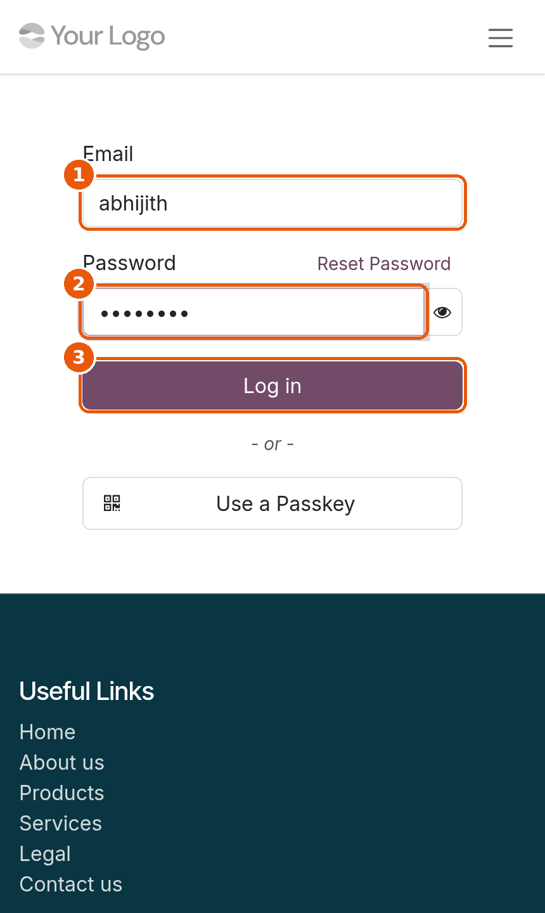
നിങ്ങളുടെ ഫോൺ സൈൻ ഇൻ ആയി തന്നെ നിൽക്കും. എല്ലാ ദിവസവും രാവിലെ ഇത് ടൈപ്പ് ചെയ്യേണ്ട ആവശ്യമില്ല.
Sign in ചെയ്ത ഉടനെ നിങ്ങൾ Field Work-ൽ എത്തും. ഇത്രയും മെനുകൾ മാത്രമേ നിങ്ങൾക്കുള്ളൂ, ഓരോന്നും നിങ്ങളുടെ സ്വന്തം ജോലിയെക്കുറിച്ചാണ്.
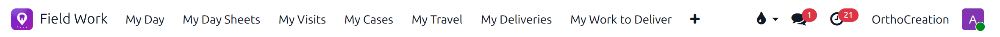
| മെനു | എന്താണ് ഇത് |
|---|---|
| My Day | ഇന്നത്തെ ക്ലിനിക്കുകളും വേണ്ട എല്ലാ ബട്ടണുകളും. ഇതാണ് നിങ്ങൾ ദിവസം മുഴുവൻ ഉപയോഗിക്കുന്ന സ്ക്രീൻ. |
| My Day Sheets | പൂർത്തിയായ നിങ്ങളുടെ ദിവസങ്ങൾ, മാനേജർ നോക്കിയതിനു ശേഷം. |
| My Visits | നിങ്ങൾ ചെയ്ത എല്ലാ ക്ലിനിക് സന്ദർശനങ്ങളും. |
| My Cases | നിങ്ങൾ എഴുതിയ എല്ലാ case slip-ഉം. |
| My Travel | ദിവസേനയുള്ള കിലോമീറ്ററും യാത്രാ ക്ലെയിമും. |
| My Deliveries / My Work to Deliver | ക്ലിനിക്കുകളിലേക്ക് നിങ്ങൾ കൊണ്ടുപോകുന്ന ജോലികൾ. |
മുകളിൽ പറഞ്ഞ എല്ലാം My Day-യിൽ ബട്ടണായി ഉണ്ട്. രാവിലെ My Day തുറന്നാൽ ദിവസം മുഴുവൻ അവിടെ തന്നെ നിന്നാൽ മതി.
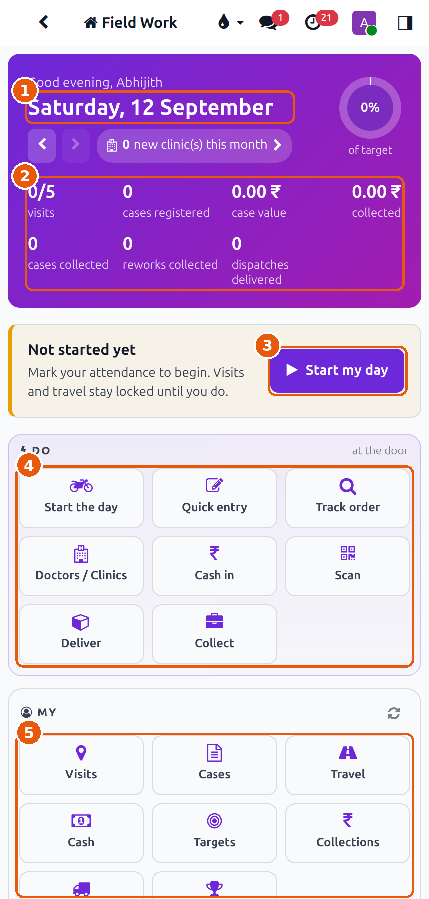
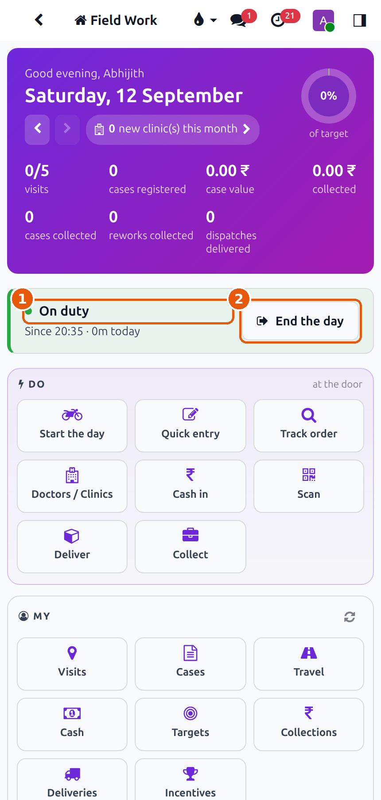
Start my day അമർത്തുക. കാർഡ് പച്ച നിറമാകും.
നിങ്ങളുടെ login employee രേഖയുമായി ബന്ധിപ്പിച്ചിട്ടില്ല. ഓഫീസിനോടോ HR-നോടോ പറയുക — ഇത് നിങ്ങൾക്ക് സ്വയം ശരിയാക്കാൻ കഴിയില്ല.
വണ്ടി മുന്നിൽ ഉള്ളപ്പോൾ തന്നെ, പുറപ്പെടുന്നതിനു മുമ്പ് ഇത് ചെയ്യുക.
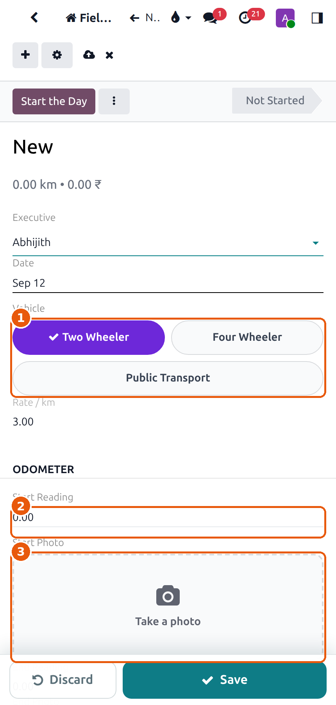
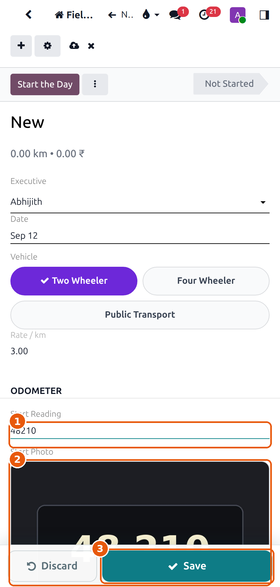
അതിനുശേഷം ഫോമിന്റെ മുകളിലുള്ള Start the Day അമർത്തുക.
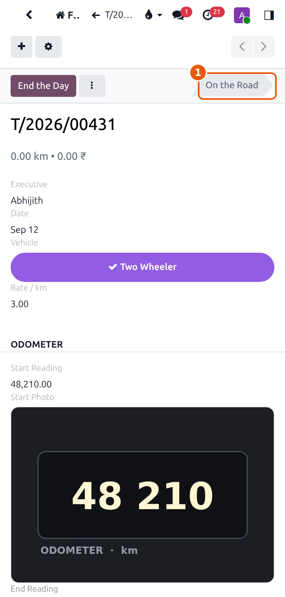
ഫോട്ടോ ഇല്ലെങ്കിൽ "A photo of the opening reading is required." എന്ന് കാണിക്കും. ഫോട്ടോ എടുത്തിട്ട് വീണ്ടും Start the Day അമർത്തുക.
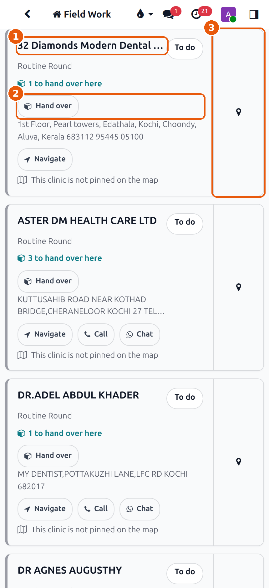
ബട്ടണുകൾക്ക് താഴേക്ക് സ്ക്രോൾ ചെയ്യുക. ഇന്ന് പോകേണ്ട ഓരോ ക്ലിനിക്കും ക്രമത്തിൽ ഒരു കാർഡായി കാണാം.
📍 = I'm Here · ✓ = Finish · 👁 = View (കഴിഞ്ഞത്)
കാർഡിൽ തന്നെ ടാപ്പ് ചെയ്താൽ പൂർണ്ണമായ visit തുറക്കും.
നിങ്ങളുടെ റൗണ്ട് തയ്യാറാക്കിയിട്ടില്ല. beat തയ്യാറാക്കാൻ മാനേജരോട് പറയുക — പിന്നെ എല്ലാ ദിവസവും രാവിലെ ക്ലിനിക്കുകൾ തനിയെ ഇവിടെ വരും. എവിടെ പോകാൻ ഉദ്ദേശിക്കുന്നു എന്ന് പറയാൻ നിങ്ങൾ ഒരു visit ഉണ്ടാക്കേണ്ട ആവശ്യമില്ല.
ക്ലിനിക്കിൽ എത്തി നിൽക്കുമ്പോൾ മാത്രം അമർത്തുക, വഴിയിൽ വെച്ചല്ല.
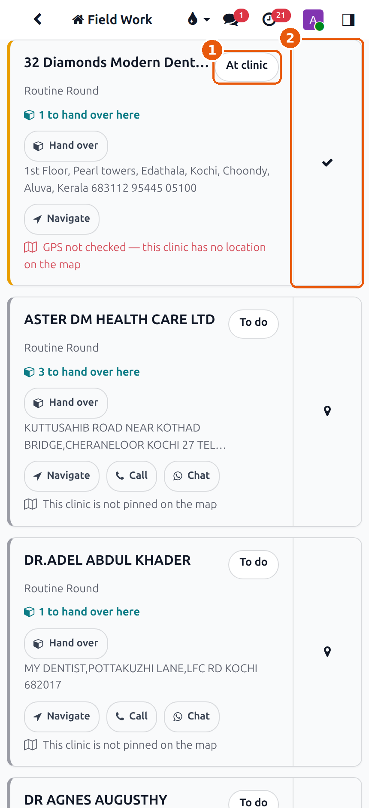
browser-ന് Location ഓൺ ചെയ്യുക, ഫോണിന്റെ മുകളിൽ അമ്പടയാളം വരുന്നതുവരെ കാത്തിരിക്കുക, പിന്നെ വീണ്ടും ടാപ്പ് ചെയ്യുക. Location ഇല്ലാതെ ഒരു visit തുടങ്ങാൻ കഴിയില്ല.
നിങ്ങളെ ഒരിക്കലും തടയില്ല. ക്ലിനിക്കിൽ നിന്ന് അകലെ നിന്നാണ് check in ചെയ്തത് എന്ന് രേഖപ്പെടുത്തും, visit അടയ്ക്കുന്നതിനു മുമ്പ് ഒരു ചെറിയ കാരണം ചോദിക്കും — ഉദാഹരണത്തിന് "met the doctor at their other branch". സത്യം എഴുതുക; ഇത് ഒരു കുറിപ്പ് മാത്രമാണ്, ശിക്ഷയല്ല.
ഇന്ന് മിക്ക ക്ലിനിക്കുകളിലും ഇത് കാണും, അത് നിങ്ങളുടെ തെറ്റല്ല: അവയിൽ മിക്കതും ഇതുവരെ മാപ്പിൽ അടയാളപ്പെടുത്തിയിട്ടില്ല. നിങ്ങളുടെ check-in രേഖപ്പെടുത്തും — എത്ര അടുത്തായിരുന്നു എന്ന് മാത്രം ആപ്പിന് പറയാൻ കഴിയില്ല.
നിങ്ങൾ ക്ലിനിക്കിൽ നിൽക്കുകയാണെങ്കിൽ visit തുറന്ന് Pin Clinic Here അമർത്തുക. അത് നിങ്ങൾക്കും ഇനി വരുന്ന എല്ലാവർക്കും ശരിയാക്കും.
ഓരോ രോഗിക്കും ഒരു slip. ഡോക്ടർ മുന്നിൽ ഉള്ളപ്പോൾ തന്നെ പൂരിപ്പിക്കുക.
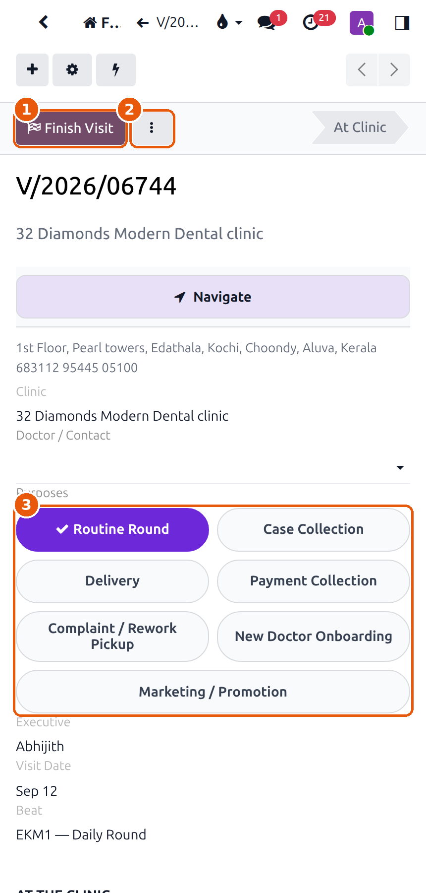
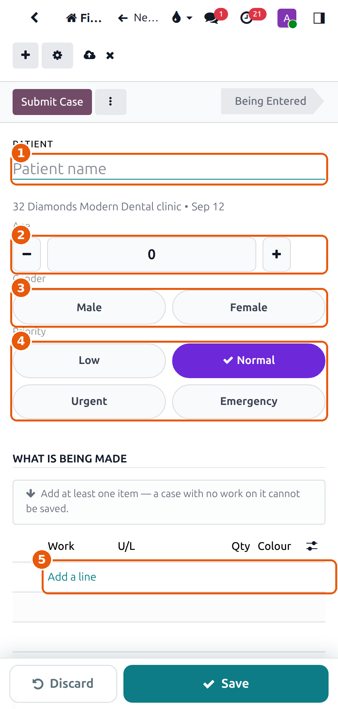
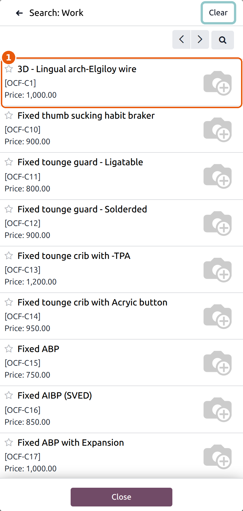
ലാബ് ഉണ്ടാക്കുന്ന എല്ലാ സാധനങ്ങളുടെയും ലിസ്റ്റ് സ്ക്രീൻ നിറയെ തുറക്കും.
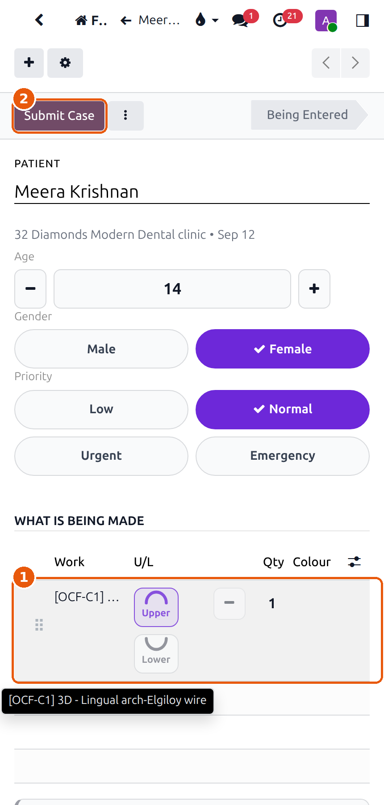
നിങ്ങൾ ഇതുവരെ ഒരു line ചേർത്തിട്ടില്ല. Add a line-ലേക്ക് തിരിച്ചു പോയി appliance തിരഞ്ഞെടുക്കുക.
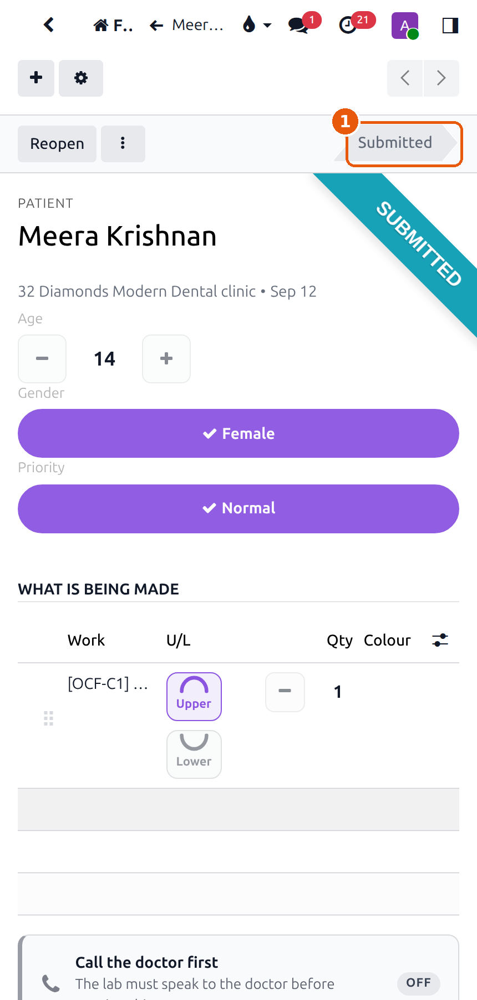
Visit-ലേക്ക് തിരിച്ചു പോയി അടുത്ത രോഗിയെ ഇതേ പോലെ ചേർക്കുക. ഒരു ഡോക്ടർ അഞ്ച് കേസ് തന്നാൽ അഞ്ച് slip വേണം.
Reopen അമർത്തി, തിരുത്തി, വീണ്ടും submit ചെയ്യുക. Visit finish ചെയ്യുന്നതുവരെ ഇത് ചെയ്യാം — അതിനുശേഷം അത് ഓഫീസിന്റെ കൈയിലാണ്.
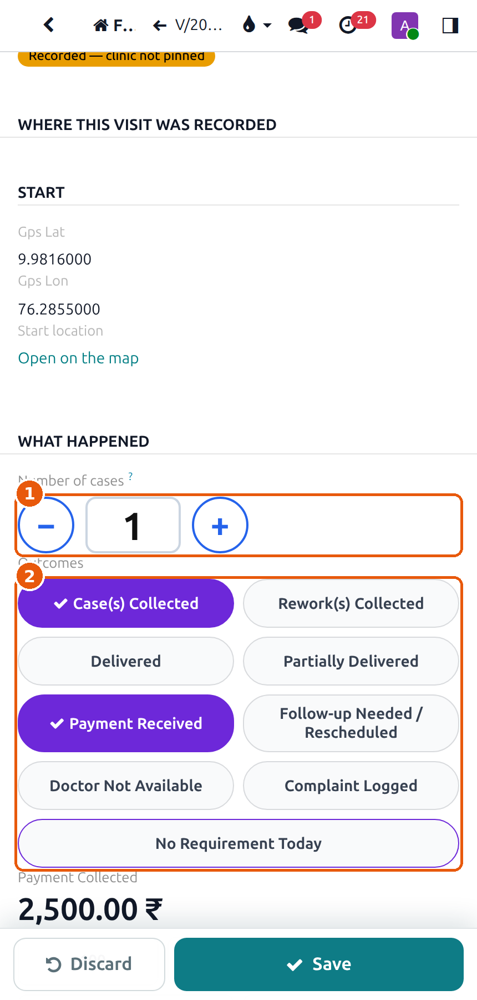
എത്ര rework എടുത്തു എന്ന് ചോദിക്കുന്ന രണ്ടാമത്തെ എണ്ണം വരും. അത് പൂരിപ്പിക്കുക.
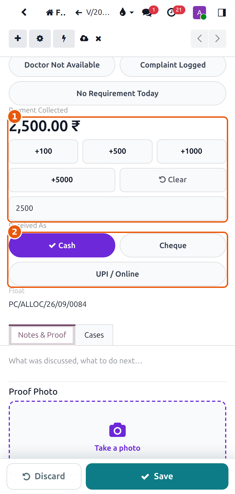
പിന്നെ Save അമർത്തുക, മുകളിലുള്ള Finish Visit അമർത്തുക.
"Record what happened…" — നിങ്ങൾ ഒരു outcome-ഉം ടാപ്പ്
ചെയ്തിട്ടില്ല.
"… case(s) have not been submitted" — ഒരു slip ഇപ്പോഴും
തുറന്നു കിടക്കുന്നു. അത് submit ചെയ്യുക, അല്ലെങ്കിൽ തെറ്റി
തുടങ്ങിയതാണെങ്കിൽ delete ചെയ്യുക.
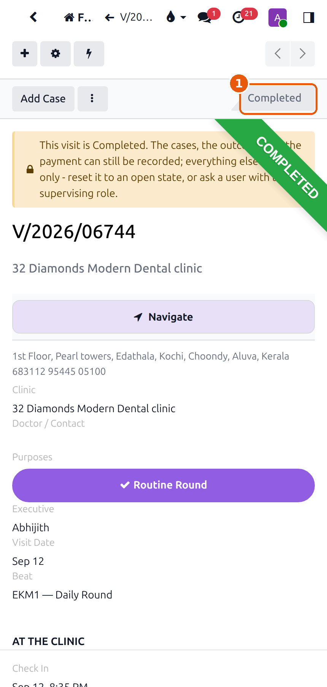
Completed ആയ visit-ലും കേസുകളുടെ എണ്ണം, outcome, പണം എന്നിവ മാറ്റാം — കാരണം പുറത്തിറങ്ങി ഒരു മിനിറ്റ് കഴിഞ്ഞാണ് പലപ്പോഴും ഇത് തീരുമാനമാകുന്നത്. ബാക്കി എല്ലാം പൂട്ടിയിരിക്കും.
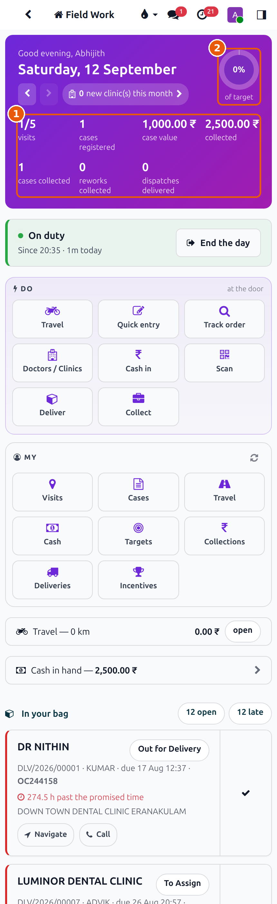
അടുത്ത ക്ലിനിക്കിലേക്ക് പോയി 7 മുതൽ 9 വരെയുള്ള ഘട്ടങ്ങൾ ആവർത്തിക്കുക.
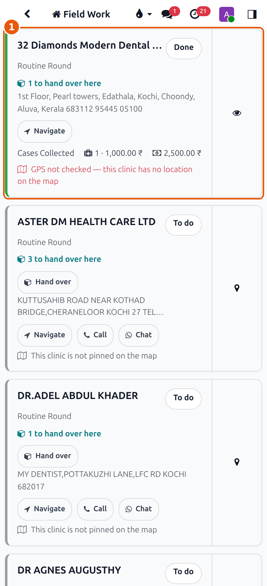
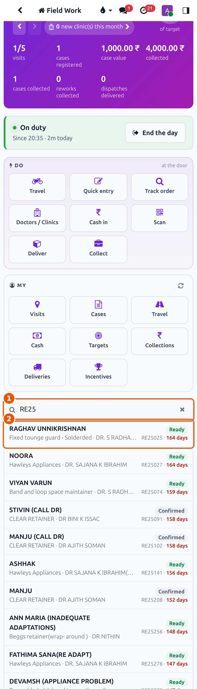
ഓരോ ഡോക്ടറും ചോദിക്കുന്ന ചോദ്യം. Track order ടാപ്പ് ചെയ്യുക.
ഇനിയും തീരാത്ത ജോലികൾ മാത്രമേ ഇവിടെ കാണൂ. കഴിഞ്ഞ് invoice ആയവ കാണിക്കില്ല.
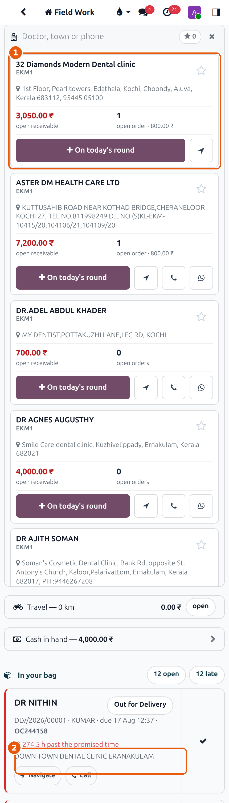
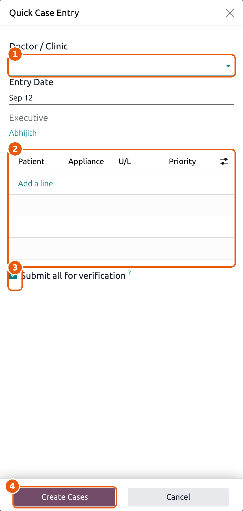
ഒരു ഡോക്ടറിൽ നിന്ന് എട്ട് impression ബാഗിൽ ഉള്ള വൈകുന്നേരങ്ങൾക്ക് — എട്ട് slip വെവ്വേറെ തുറക്കേണ്ട.
ദിവസങ്ങൾ കഴിഞ്ഞ് കേസ് ചേർത്താൽ ആപ്പ് കാരണം ചോദിക്കും. എടുത്ത അന്നുതന്നെ ചേർത്താൽ ഒരിക്കലും ചോദിക്കില്ല.
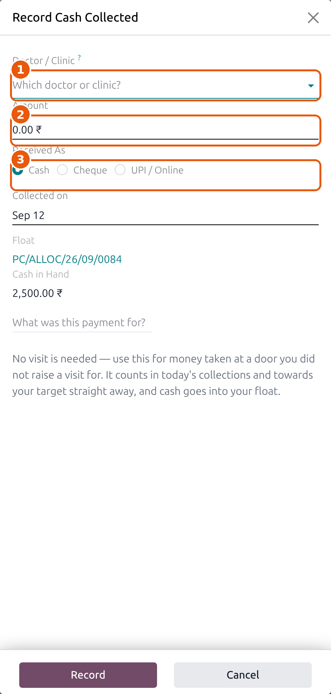
പണം എപ്പോഴും പേപ്പർ ജോലിക്കൊപ്പം വരില്ല. വേറെ ആവശ്യത്തിന് പോയപ്പോൾ ഡോക്ടർ പഴയ കുടിശ്ശിക തീർക്കുന്നു, പോകുന്ന വഴി റിസപ്ഷനിസ്റ്റ് ഒരു കവർ തരുന്നു, കഴിഞ്ഞ ആഴ്ച വേറൊരാൾ എത്തിച്ച കേസിന്റെ പണം ആരെങ്കിലും തരുന്നു.
മുമ്പ് ഇത് രേഖപ്പെടുത്താൻ ഒരു visit-ലെ payment box മാത്രമേ ഉണ്ടായിരുന്നുള്ളൂ — അതായത് നടക്കാത്ത ഒരു visit ഉണ്ടാക്കേണ്ടി വന്നു. ഇനി അത് വേണ്ട. DO-യിലെ Cash in ടാപ്പ് ചെയ്യുക.
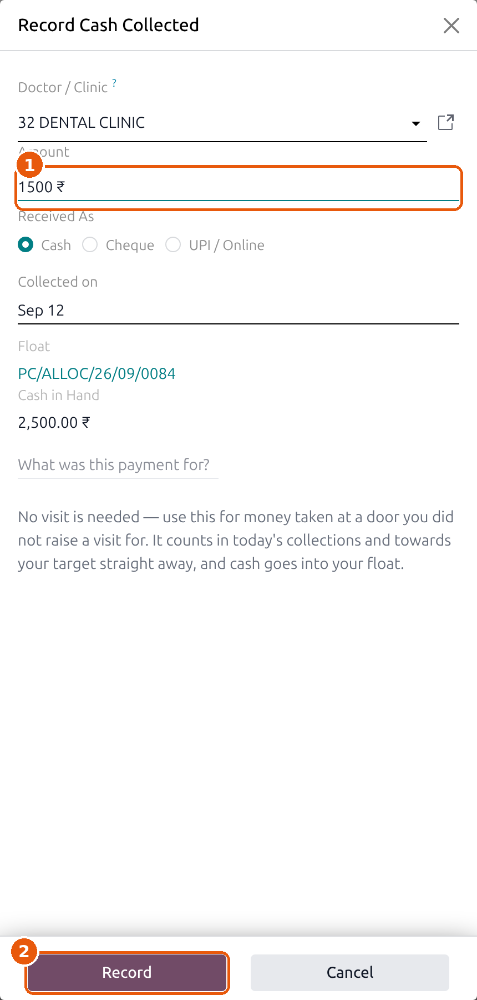
ഒരു visit രേഖപ്പെടുത്തുന്ന അതേ മൂന്ന് കാര്യങ്ങൾ തന്നെയാണ് ഇത്, അതുകൊണ്ട് കണക്കും ഒരുപോലെ: ഇന്നത്തെ collected തുകയിൽ, നിങ്ങളുടെ day sheet-ൽ, നിങ്ങളുടെ collection target-ൽ, മാനേജരുടെ റിപ്പോർട്ടിൽ. രൊക്കം പണമാണെങ്കിൽ അത് തനിയെ നിങ്ങളുടെ float-ൽ പോകും — Cash into My Float വേറെ ചെയ്യേണ്ട.
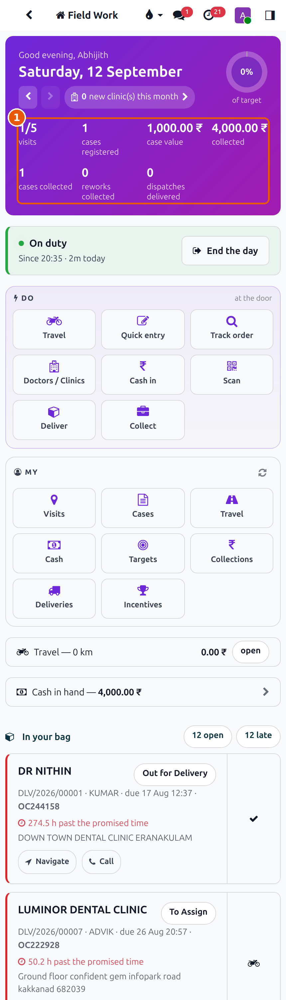
പണം കൈയിൽ കിട്ടുമ്പോൾ രേഖപ്പെടുത്തുക, വാക്ക് കിട്ടുമ്പോഴല്ല. Cheque-ഉം UPI-യും നേരിട്ട് ബാങ്കിൽ എത്തും; രൊക്കം പണം മാത്രമേ float-ൽ പോകൂ.
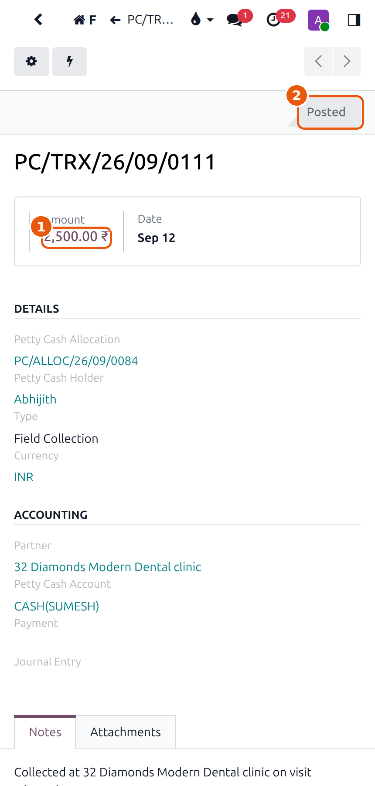
ക്ലിനിക്കിൽ നിന്ന് രൊക്കം പണം (cash) വാങ്ങിയാൽ, അത് നിങ്ങളുടെ കൈയിലുണ്ട് എന്ന് സിസ്റ്റത്തോട് പറയുക. പൂർത്തിയായ visit-ൽ മൂന്ന് കുത്തുകൾ ടാപ്പ് ചെയ്ത് Cash into My Float തിരഞ്ഞെടുക്കുക.
ഇത് പണം തിരികെ ഏൽപ്പിക്കുന്നതിന് പകരമല്ല. പണം ഇപ്പോൾ എവിടെയാണ് എന്ന് രേഖപ്പെടുത്തുക മാത്രമാണ് — എന്നിട്ട് ആരും വിളിച്ച് ചോദിക്കേണ്ടി വരില്ല.
Cheque-ഉം UPI-യും നേരിട്ട് ബാങ്കിൽ എത്തും. രൊക്കം പണം മാത്രമേ float-ൽ ഇടാവൂ.
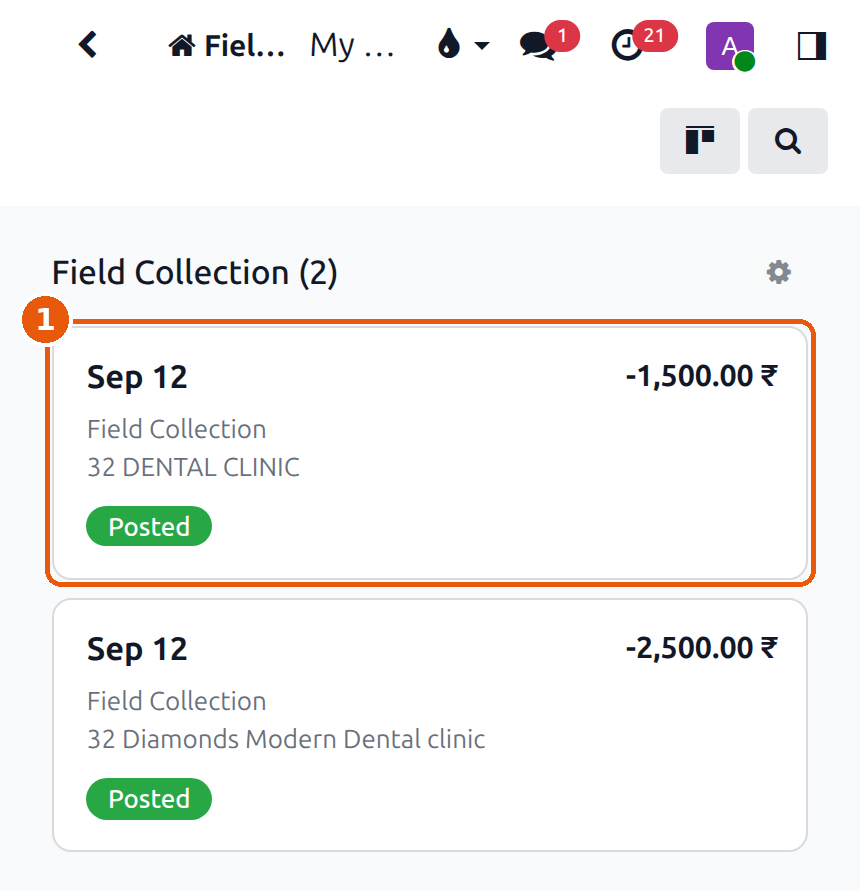
My Day-യുടെ താഴെയും Cash in hand കാണിക്കും. വാങ്ങിയ പണം ഇതുവരെ float-ൽ ഇട്ടിട്ടില്ലെങ്കിൽ അവിടെ ഓർമ്മപ്പെടുത്തും.
രേഖപ്പെടുത്തുന്നത് പണം തിരികെ കൊടുക്കുന്നതിന് തുല്യമല്ല. പതിവുപോലെ ഓഫീസിൽ പണം ഏൽപ്പിക്കുക — രാത്രി മുഴുവൻ കൈയിൽ വെക്കരുത്.
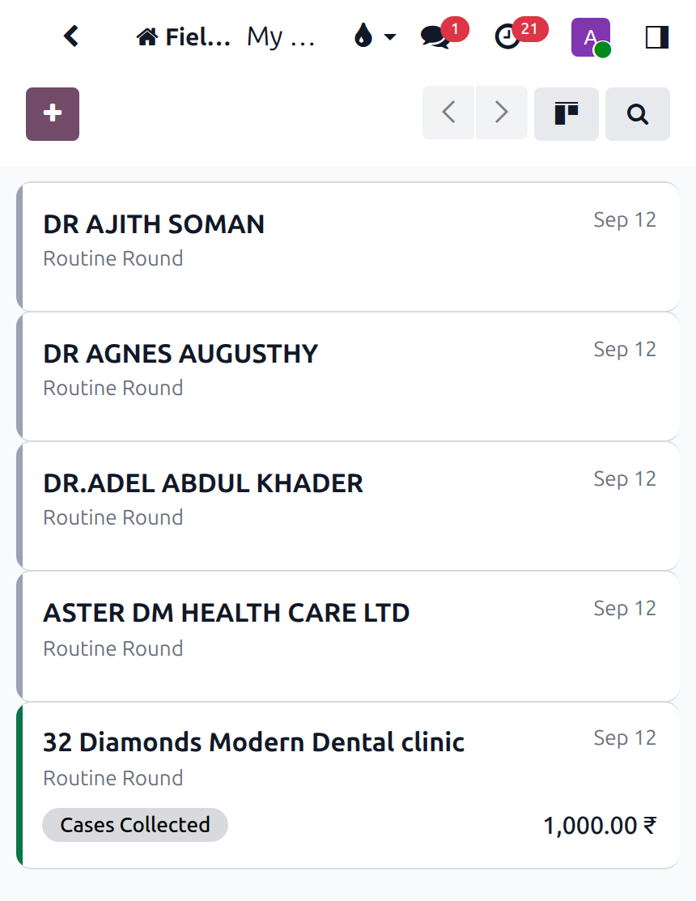
നിങ്ങൾ ചെയ്ത എല്ലാ ക്ലിനിക് സന്ദർശനങ്ങളും, ഏറ്റവും പുതിയത് ആദ്യം, ഓരോന്നിൽ നിന്നും കിട്ടിയത് സഹിതം — എത്ര കേസ്, എത്ര പണം.
കഴിഞ്ഞ ആഴ്ച പോയ ഒരു ക്ലിനിക്കിനെക്കുറിച്ച് ആരെങ്കിലും ചോദിച്ചാൽ, അല്ലെങ്കിൽ ഈ മാസം അവിടെ പോയോ എന്ന് നോക്കാൻ, ഇത് ഉപയോഗിക്കുക.
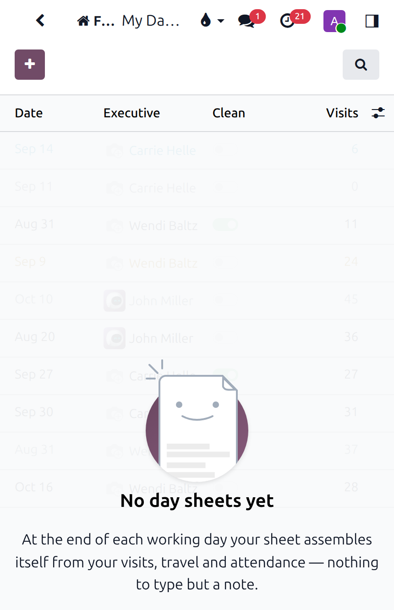
ഇത് നിങ്ങൾ എഴുതേണ്ട. ഓരോ ദിവസവും അവസാനിക്കുമ്പോൾ നിങ്ങളുടെ visits, travel, attendance എന്നിവയിൽ നിന്ന് ഈ sheet തനിയെ ഉണ്ടാകും, എന്നിട്ട് മാനേജർമാരുടെ അടുത്തേക്ക് പോകും — ആദ്യം Operational Manager, പിന്നെ Marketing Manager.
ഒരു ദിവസം തിരിച്ചു വന്നാൽ ഇവിടെ നോക്കുക. എന്താണ് ശരിയാക്കേണ്ടത് എന്ന് sheet-ൽ പറയും. ശരിയാക്കിയാൽ അത് വീണ്ടും അവരുടെ അടുത്തേക്ക് പോകും.
"No day sheets yet" എന്നാൽ നിങ്ങളുടെ ഒരു ദിവസവും ഇതുവരെ അടച്ച് മുകളിലേക്ക് പോയിട്ടില്ല എന്നാണ്. അത് തനിയെ വന്നുകൊള്ളും.
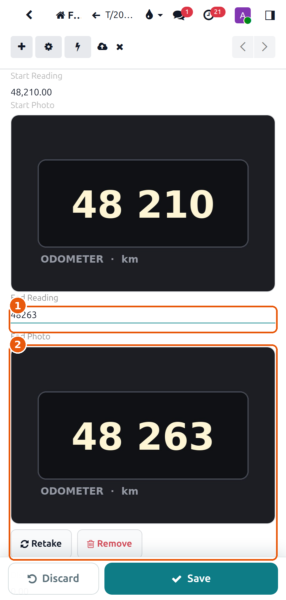
DO-യിലെ Travel അവസാനമായി ഒരിക്കൽ കൂടി തുറക്കുക.
Save അമർത്തുക, പിന്നെ End the Day അമർത്തുക.
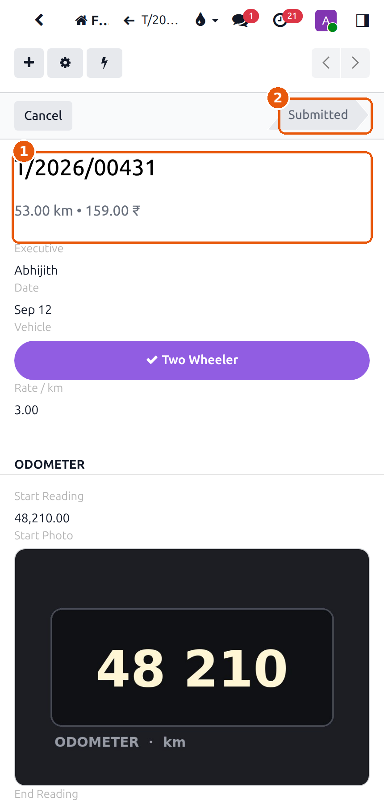
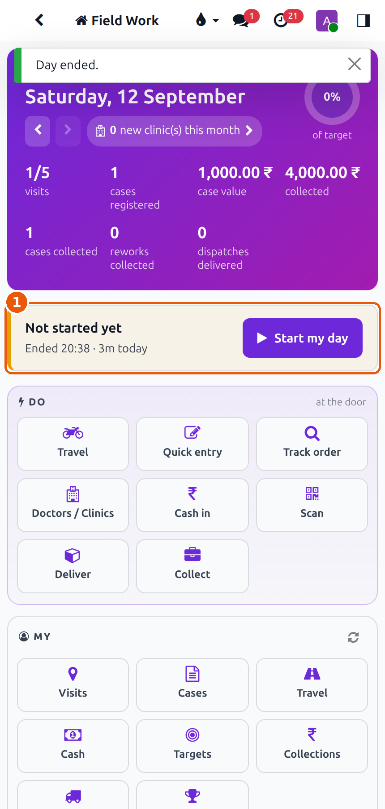
My Day-യിലേക്ക് തിരിച്ചു പോയി പച്ച കാർഡിലെ End the day അമർത്തുക.
ഇത്രയേ ഉള്ളൂ ഒരു ദിവസം. നിങ്ങളുടെ day sheet രാത്രിയിൽ തനിയെ ഉണ്ടാക്കിക്കൊള്ളും.
| സ്ക്രീനിൽ കാണുന്നത് | എന്ത് ചെയ്യണം |
|---|---|
| "Location is off" | browser-ന് Location ഓൺ ചെയ്യുക, ഫോണിന്റെ മുകളിൽ അമ്പടയാളം വരുന്നതുവരെ കാത്തിരിക്കുക, വീണ്ടും ടാപ്പ് ചെയ്യുക. I'm Here-നും Finish-നും ഇത് വേണം. |
| "This check-in was … m from the clinic. Add a short reason" | ക്ലിനിക്കിൽ നിന്ന് അകലെ നിന്നാണ് check in ചെയ്തത്. ഒരു ചെറിയ സത്യസന്ധമായ കാരണം എഴുതിയാൽ visit അടയ്ക്കാം. |
| "GPS not checked — this clinic has no location on the map" | ഈ ക്ലിനിക്കിന്റെ സ്ഥലം ആരും ഇതുവരെ അടയാളപ്പെടുത്തിയിട്ടില്ല. നിങ്ങൾ അവിടെ നിൽക്കുകയാണെങ്കിൽ visit തുറന്ന് Pin Clinic Here ഉപയോഗിക്കുക. അത് നിങ്ങൾക്ക് ശേഷം വരുന്ന എല്ലാവർക്കും സഹായമാകും. |
| "Record what happened at the clinic before closing the visit." | What happened-ൽ ഒരു outcome എങ്കിലും ടാപ്പ് ചെയ്യുക. |
| "… case(s) have not been submitted" | ഒരു slip ഇപ്പോഴും തുറന്നു കിടക്കുന്നു. അത് submit ചെയ്യുക, അല്ലെങ്കിൽ തെറ്റി തുടങ്ങിയതാണെങ്കിൽ delete ചെയ്യുക. |
| "Say how the payment was received." | തുക കൊടുത്തു, പക്ഷേ Cash / Cheque / UPI പറഞ്ഞില്ല. ഒന്ന് ടാപ്പ് ചെയ്യുക. |
| "A photo of the opening reading is required." | ദിവസം തുടങ്ങുന്നതിനു മുമ്പ് ഓഡോമീറ്ററിന്റെ ഫോട്ടോ എടുക്കുക. |
| "Nothing planned for today." | നിങ്ങളുടെ റൗണ്ട് തയ്യാറാക്കിയിട്ടില്ല. beat തയ്യാറാക്കാൻ മാനേജരോട് പറയുക. |
| "Not set up for attendance" | നിങ്ങളുടെ login employee രേഖയുമായി ബന്ധിപ്പിച്ചിട്ടില്ല. HR-നോട് പറയുക. |
| ലിസ്റ്റിൽ ഒരു ക്ലിനിക് കാണുന്നില്ല | നിങ്ങളുടെ സ്വന്തം റൂട്ടിലെ ക്ലിനിക്കുകൾ മാത്രമേ കാണൂ. നിങ്ങളുടെ beat-ൽ അത് ചേർക്കാൻ മാനേജരോട് പറയുക. |
| ഇന്നലത്തെ കാര്യം എഴുതാൻ മറന്നു | My Day-യിൽ തീയതിയുടെ അടുത്തുള്ള പിന്നോട്ടുള്ള അമ്പടയാളം ഉപയോഗിക്കുക. കുറച്ച് ദിവസം പിന്നോട്ട് പോകാം — അതിലധികം പറ്റില്ല, മുന്നോട്ട് ഒരിക്കലും പറ്റില്ല. |